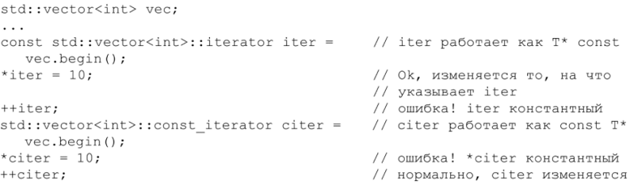

⇐Правило 2: Предпочитайте const, enum и inline использованию #define
Глава 1
Правило 3: Везде, где только можно используйте const
Замечательное свойство модификатора const состоит в том, что он накладывает определенное семантическое ограничение: данный объект не должен модифицироваться, - и компилятор будет проводить это ограничение н жизнь, const позволяет указать компилятору и программистам, что определенная величина должна оставаться неизменной. Во всех подобных случаях вы должны обозначить это явным образом, призывая себе на помощь компилятор и гарантируя тем самым, что ограничение не будет нарушено.
Ключевое слово const удивительно многосторонне. Вне классов вы можете использовать его для определения констант в глобальной области или в пространстве имен (см. правило 2). а также для статических объектов (внутри файла, функции или блока). Внутри классов допустимо применять его как для статических, так и для нестатических данных-членов. Для указателей можно специфицировать. должен ли быть константным сам указатель, данные, на которые он указывает, либо и то, и другое (или ни то, ни другое):

Этот синтаксис не так страшен, как может показаться. Если слово const появляется слева от звездочки, константным является то, на что указывает указатель; если справа, то сам указатель является константным. Наконец, если же слово const появляется с обеих сторон, то константно и то. и другое.
Когда то, на что указывается, константа, некоторые программисты ставят const перед идентификатором типа. Другие - после идентификатора типа, но перед звездочкой. Семантической разницы здесь нет, поэтому следующие функции принимают параметр одного и того же тина:

Поскольку в реальном коде встречаются обе формы, следует привыкать и к той, и к другой.
Итераторы STL смоделированы на основе указателей, поэтому iterator ведет себя почти как указатель Т*. Объявление const-итератора подобно объявлению const-указателя (то есть записи Т* const): итератор не может начать указывать на что-то другое, но то, на что он указывает, может быть модифицировано. Если вы хотите иметь итератор, который указывал бы на нечто, что запрещено модифицировать (то есть STL-аналог указателя const Т*). то вам понадобится константный итератор:
